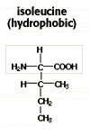
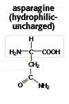
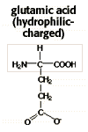
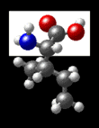
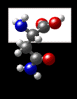
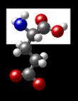

Large Molecules Problem Set
Problem 5: Elements of protein structure
Tutorial to help answer the question
Which statement is true concerning the structure of proteins?
Tutorial
|
Here is a review of features of protein structure that can be used to analyze the different answer choices. You may discover that all of the answer choices are correct! |
|
Primary structure
Proteins are composed of 20 different kinds of amino acids joined in a linear polypeptide chain by peptide bonds. The primary structure is the sequence of the amino acids. Secondary structure Protein secondary structure refers to regular, repeated patters of folding of the protein backbone. The two most common folding patterns are the alpha helix and the beta sheet. Tertiary structure Tertiary structure refers to the overall folding of the entire polypeptide chain into a specific 3D shape. Quaternary structure The quaternary structure describes the way in which the different subunits are packed together to form the overall structure of the protein. Proteins made of two or more polypeptide chains have quaternary structure. (For more information on structures, refer to the tutorial for problem 3) |
|
There are 20 different amino acids found in proteins. The side chains (R-groups) differ in chemical properties. Some are polar, but uncharged. Some are polar and normally have a positive or negative charge in solution. Amino acids with polar side chains are said to be hydrophilic (water loving) because they form weak interactions with water molecules. The R-groups of hydrophilic amino acids contain electronegative atoms like O and N. Some amino acids are non-polar (hydrophobic) because their side chains are made up mostly of hydrocarbon chains. |
|  |  |  |
|  |  |  |
| Different proteins have different structures and properties due to the specific locations of hydrophilic and hydrophobic amino acids. | ||


Department of Biochemistry and Molecular Biophysics
The University of Arizona
Revised: October 2004
Contact the Development Team
http://www.biology.arizona.edu
All contents copyright © 1996-2003.
All rights reserved.